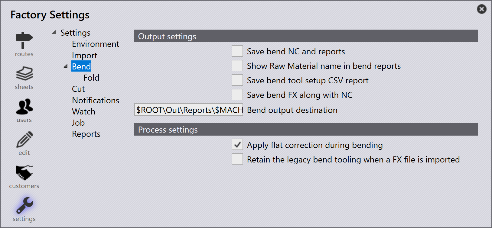

Bend
Se puede acceder a la configuración de Bend haciendo clic en el icono de Factory y luego seleccionando Settings donde verá una lista de todas las configuraciones ambientales del software disponibles.

Ajustes de salida
Guardar plegado CN e informes- Los resultados de herramientas se guardan solo si el herramental está OK y estas configuraciones de exportación están habilitadas y configuradas. Habilite esta opción para que el NC de Bend y los reportes se reserven.
Mostrar nombre de material prima en informes de plegado - TruSmartCAM imprimirá nombres de materia prima en los reportes de bend.
Guardar informe CSV de sujeción del útil de plegado - Exporta los detalles de configuración de herramienta de bend a un archivo CSV
Guardar FX plegado junto con CN - Si esta opción está habilitada, cuando se realiza el doblado dentro de TruSmartCAM la salida de la pieza se guardará en el directorio junto con los archivos NC y el reporte para cada configuración.
Lugar de destino de salida de plegado - Este es el destino para los archivos NC, reportes y FX que se guardarán.
Ajustes de proceso
Aplicar corrección plana durante el plegado - Cuando esta opción está seleccionada, TruSmartCAM verifica si las dimensiones planas fueron actualizadas durante el herramental de bend y vuelve a actualizar la copia maestra utilizada para el proceso de corte.
Retener utillaje de plegado heredado cuando se importa un archivo FX - Habilite esta opción para retener el herramental existente cuando un archivo FX heredado se importe en TruSmartCAM.